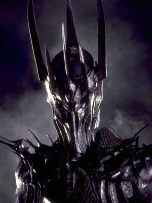
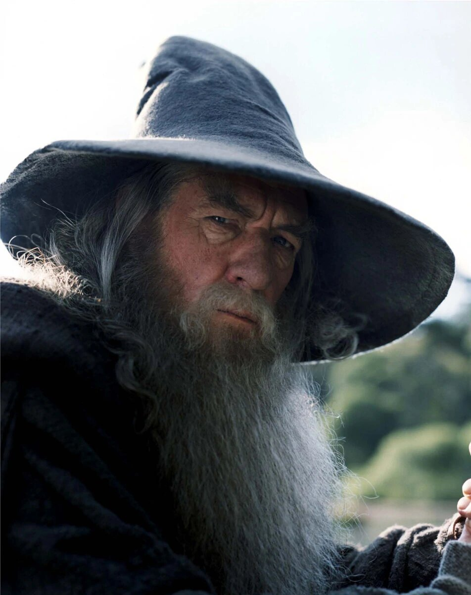

The title refers to the story's main antagonist, the Dark Lord Sauron, who in an earlier age created the One Ring to rule the other Rings of Power given to Men, Dwarves, and Elves, in his campaign to conquer all of Middle-earth. From homely beginnings in the Shire, a hobbit land reminiscent of the English countryside, the story ranges across Middle-earth, following the quest to destroy the One Ring mainly through the eyes of the hobbits Frodo, Sam, Merry and Pippin.
|
Frodo Baggins, son of Drogo Baggins, was a hobbit of the Shire in the late Third Age. He is commonly considered Tolkien's most renowned character for his leading role in the Quest of the Ring, in which he bore the One Ring to Mount Doom, where it was destroyed. He was a Ring-bearer, best friend to his gardener, Samwise Gamgee, and one of three hobbits who sailed from Middle-earth to the Uttermost West at the end of the Third Age. |
|  | Sauron, the eponymous Lord of the Rings, was the greatest subversive Maia, the maker of the One Ring, renowned student of the Vala Aulë, and the most trusted lieutenant of Morgoth. After Morgoth's ousting by the Valar, Sauron became the second Dark Lord and sought to conquer Middle-earth and even Númenor through guileful trickery - the chief representation of which were the Rings of Power - or overwhelming legions. |
|  | Gandalf the Grey, later known as Gandalf the White, and originally named Olórin (Quenya; IPA: [oˈloːrin]), was an Istar (Wizard), dispatched to Middle-earth in the Third Age to combat the threat of Sauron. He joined Thorin II Oakenshield and his company to reclaim the Lonely Mountain from Smaug, helped form the Fellowship of the Ring to destroy the One Ring, and led the Free Peoples in the final campaign of the War of the Ring. |